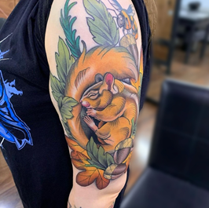

TATUAJES ¿A COLOR O EN BLANCO Y NEGRO?
¿Cómo se verá mejor mi tatuaje? ¿en color o en negro? Esto dependerá completamente: el diseño, la zona a tatuar, factores de la piel, o si queres tapar un tatuaje viejo o alguna cicatriz. Aca dejamos algunos puntos clave a considerar. Tatuajes a color o en blanco y negro.
COLOR DE LA PIEL
A diferencia de lo que se suele creer, en pieles oscuras sí se pueden hacer tatuajes a color, es verdad que no se lucirán tanto como lo harían en una tez blanca, sí pueden verse bien y hacerse en la mayoría de pieles. Para hacerlo deben de tomarse algunas consideraciones de diseño, como la selección de la paleta de color, el contraste entre tonos, entre otras formas de abordarlo. Un profesional del tatuaje sabrá guiarte en ese camino.

ZONA
El lugar donde quieres tatuarte juega un rol importante, ya que algunas zonas tienden a expandir o “borrar" el tatuaje, por lo que un tatuaje a color tendrá menos oportunidades de mantenerse en buenas condiciones contra un tatuaje en negro. Claro está que depende muchísimo de la técnica de tu tatuador, las zonas que pueden ser complicadas (pero no imposibles) son, falanges de dedos y pies, palma de las manos, área del tendón de aquiles, entre otros.
¿ES PARA CUBRIR OTRO TATUAJE?
Es común pensar que cubrir el área con negro para tapar el tatuaje es lo más efectivo, sin embargo hay que mencionar que no siempre puede ser así.Para cubrir un tatuaje o cicatriz efectivamente, el tatuador deberá hacer un análisis del estado del tatuaje a cubrir o del daño en la piel según sea el caso. Habrá opciones de diseño que queden mejor en negro y otras en color, esto dependerá de la experiencia y oficio del tatuador y de las posibilidades del área a cubrir. Te sugerimos mantenerte abierto y razonar a fondo la información que te dé el tatuador de cómo y porqué te recomienda abordarlo así y si dudas es bueno que tengas una segunda opinión de otro tatuador antes de tatuarte (para tener una consulta sin costo conmigo hacer click aquí)
IDEA Y/CONCEPTO DEL DISEÑO
La congruencia de la idea y/o concepto de tu diseño con la decisión de hacerlo en negro o en color es fundamental, quiza quieras expresar oscuridad, absoluta seriedad, misterio o algun otro valor que quedará mejor representado en negro, o quiza quieras tatuarte un clásico tradicional a color o tal vez sea necesario el color para expresar una idea claramente, eso dependera completamente del concepto de tu tatuaje. Es una decisión completamente tuya, como tatuadores te daremos nuestra mejor opinión y haremos algunas sugerencias, para hacerlo viable y bien hecho.
COSTO Y DOLOR
Específicamente los tatuajes a color suelen ser un poco más costosos, esto debido a que tienen más procesos en medio para lograr los efectos deseados. Esto no quiere decir que un tatuaje colorido será siempre más costoso que uno negro, esto dependerá del artista, y del tatuaje por supuesto, pero suelen ser más caros,en cuanto al dolor, un tatuaje en sombras negras/grises, será menos doloroso que uno con macizos coloridos o negros. Esto es porque las “plastas” de tinta requieren ser realizadas con una mayor profundidad de las agujas y esto puede resultar en una sesión un poco dolorosa (nada que no puedas tolerar lee nuestro blog del dolor aquí) en cambio las tatuajes en sombras son normalmente hechos con suavidad para lograr los efectos de degradado y ahorramos en dolor.
IDEA/CONCEPTO DEL DISEÑO
La congruencia de la idea y/o concepto de tu diseño con la decisión de hacerlo en negro o en color es fundamental, quiza quieras expresar oscuridad, absoluta seriedad, misterio o algun otro valor que quedará mejor representado en negro, o quiza quieras tatuarte un clásico tradicional a color o tal vez sea necesario el color para expresar una idea claramente, eso dependera completamente del concepto de tu tatuaje. Es una decisión completamente tuya, como tatuadores te daremos nuestra mejor opinión y haremos algunas sugerencias, para hacerlo viable y bien hecho.
En conclusión amo tanto los tatuajes a color cómo los tatuajes en blanco y negro, para tomar la decisión sobre qué tipo te conviene, toma en cuenta los factores que mencione, lo que más te gusta y también la opinión del tatuador, que si es profesional podrá ser una buena guía a la hora de tomar la decisión sobre las cualidades de tu tatuaje. Me preocupo por que cada tatuaje explote todas sus posibilidades, sea ejecutado con la mejor técnica y sobre todo que el cliente quede feliz con su nuevo tatuaje.